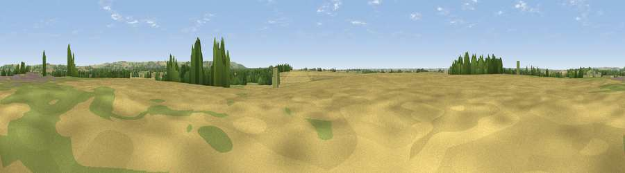

Drabbles Hilll
#34709 in England · top 64% of its area beats it · near North KelseyThe view, rendered

A 360° render of this exact spot computed from the terrain model, tree cover and land cover — summer colours, afternoon light, calibrated against photographs of famous viewpoints. Real trees, hedges and buildings will differ in detail.
The panorama
Grey silhouette: terrain skyline in each direction (720 bearings, Earth curvature and refraction included). Dashed green: skyline with trees (+15 m) and buildings (+8 m) as obstacles. Blue strip: how far the ground is visible on each bearing.
Where the view opens
Wedge length = distance to the farthest visible ground on that bearing (vegetation-aware). Rings at 10, 25 and 50 km.
What fills the view
63% cropland · 26% grassland · 9% woodland · 2% built-up
Angular shares of the visible panorama (visual magnitude), not map area. Landscape diversity 0.41 (0–1 Shannon).
Key numbers
More beautiful places nearby
The staircase of upgrades: each row has a higher view potential than everything closer. Driving times are estimates from straight-line distance, calibrated against real road routing — check an actual route before setting out.
| Place | Direction | Drive | Score |
|---|---|---|---|
| Viewpoint near Searby | NNE · 5 km | ~11 min | 51.6 |
| Viewpoint near Nettleton | ESE · 5 km | ~11 min | 64.7 |
| Viewpoint near Claxby | SE · 7 km | ~14 min | 70.5 |
| Viewpoint near Claxby | SE · 8 km | ~16 min | 71.5 |
| Garrowby Hill (A166 crest) | NNW · 61 km | ~83 min | 71.9 |
| Viewpoint near Acklam | NNW · 65 km | ~88 min | 73.8 |
| Beacon Hill | N · 74 km | ~98 min | 79.1 |
| Viewpoint near Speeton | N · 74 km | ~98 min | 80.0 |
53.49586, -0.40420 · source: osm peak · position refined by local search. Computed location — check access rights before visiting.